Привет, я Саид AI Fullstack Developer собираю продукты end-to-end
Проектирую и запускаю backend API, frontend UI, mobile/desktop приложения, DevOps-контур и AI-workflows: RAG, function calling, evals и observability.
Обо мне
Меня зовут Саид Латипов. Мой путь начался с системного администрирования — 2 года я разбирался, как устроена инфраструктура изнутри: серверы, сети, автоматизация, поддержка.
Затем перешёл в разработку и начал собирать продукты целиком: интерфейсы, API, базы данных, мобильные клиенты, desktop-сборки, деплой и документацию.
Сейчас развиваюсь как AI/fullstack-разработчик: использую AI-assisted development как инженерный процесс — ставлю задачи агентам, проверяю результат, пишу тесты/evals, контролирую безопасность и довожу проекты до работающего состояния.
Стек и инструменты
Frontend / Desktop
Backend / API
AI Engineering
Mobile / Product
Data / DevOps
Security / Quality
Кейсы

IMAG — каталог-бот для продажи iPhone
Telegram-витрина (@appllemag_bot) для продажи iPhone разных регионов и конфигураций: удобный каталог с переходом прямо в диалог с менеджером для оформления заказа — без сайта.
- Каталог по моделям (iPhone 17 / 17 Air / 17 Pro / 17 Pro Max / 17e), внутри — варианты по региону 🇺🇸🇯🇵🇮🇳🇭🇰, памяти, цвету и цене
- Карточка товара с подробными характеристиками и ценой
- Кнопка «Связаться с менеджером» — прямой переход в диалог для оформления заказа
- /myid — получение Telegram ID для настройки доступа администратора
- Каталог и заявки хранятся в SQLite, автосидинг каталога при старте
- Деплой systemd-сервисом на VPS, доступ к Telegram API через WireGuard-туннель (обход RU-блокировки)


ОЧУ «ЦО Интеллект»
Сайт школы с кастомной CMS на Laravel 13 + Filament v5 (Backend, MySQL/SQLite) и React 18 + Vite + Tailwind + Framer Motion (Frontend). Редакторы без программистов управляют всем контентом: страницами, новостями, мероприятиями, навигацией и главной.
- Блочный конструктор страниц: текст, изображения, видео, таблицы, колонки, callout
- Редактор главной — drag-and-drop секции (hero-слайдер, статистика, CTA и др.)
- Древовидная навигация с авто-подстановкой ссылок и массовыми действиями
- Новости и мероприятия: фотогалерея с lightbox, видео-сетка, обложки
- Медиабиблиотека, преподаватели, кружки, заявки на консультацию
- Безопасность: CORS, rate limiting, DOMPurify, sandbox для iframe, ролевой доступ


«Интеллект» — система учёта достижений (KPI-сервис)
Школа фиксировала участие в олимпиадах вручную, без рейтингов и мотивации. Сделал full-stack сервис с автоматическим расчётом KPI, рангов, рейтингов и достижений для учеников, учителей и родителей.
- Олимпиады и конкурсы: добавление, участие, результаты, верификация
- KPI-баллы — конфигурируются под каждую роль и событие, годовой сброс и история
- Ранги с автоповышением по формуле и прогресс-барами
- Достижения — нашивки, жетоны, значки за выполнение условий
- Рейтинги по классам, параллелям и школе целиком
- Импорт учеников/учителей/классов из Excel, чат, голосования, апелляции
- Полный пакет документов по 152-ФЗ: согласия, политика конфиденциальности, модель угроз, акт классификации ИСПДн


Сота — соцсеть, обучение и проекты под единым SSO
Цифровая экосистема нового поколения: социальная сеть, образовательная платформа, биржа проектов/идей и ИИ-инструменты в одном продукте. Один аккаунт — лента, обучение, командная работа и фриланс.
- Соцсеть: лента с постами/реакциями/комментариями, истории и reels, профили, подписки, личные и групповые чаты в реальном времени, уведомления, ИИ-чат-ассистент
- Роли: пользователь / модератор / админ / супер-админ с админ- и модераторскими панелями, динамическая пересборка интерфейса без релогина
- Обучение: каталог курсов с уровнями, ценами и прогрессом, запись на курсы, модерация контента (черновик → ревью → публикация)
- Проекты/Идеи (в разработке): каталог по 18 сферам, roadmap, kanban, открытые роли, КодХаб для репозиториев, биржа идей, каталог ИИ-помощников
- E2E-шифрование сообщений на libsodium, безопасное хранение API-ключей ИИ-провайдеров
- Микросервисная архитектура на Go (auth, social, messaging, notifications, media, ai, education), CI: пуш в main → автодеплой и пересборка Docker-сервисов
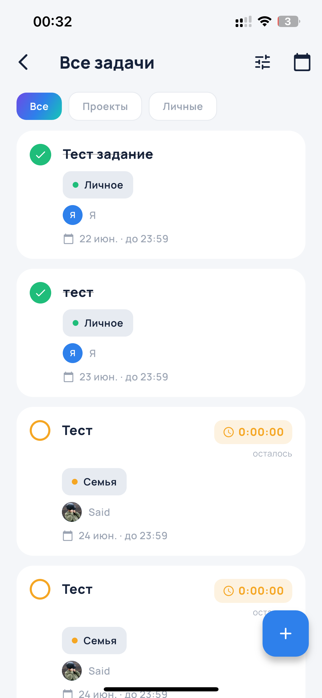
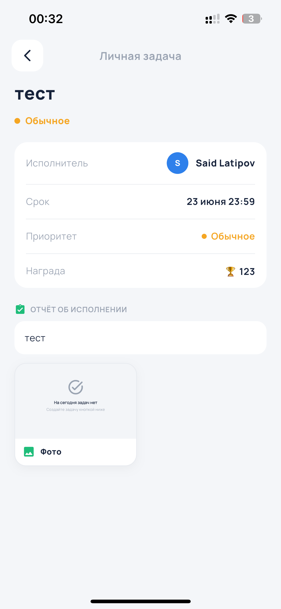
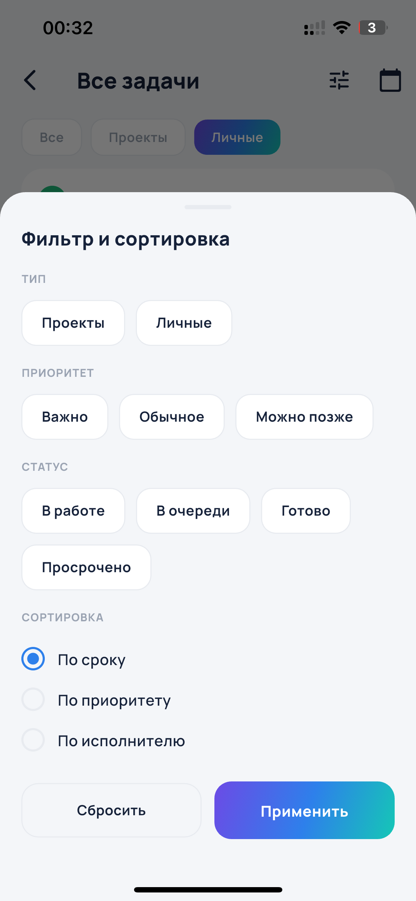
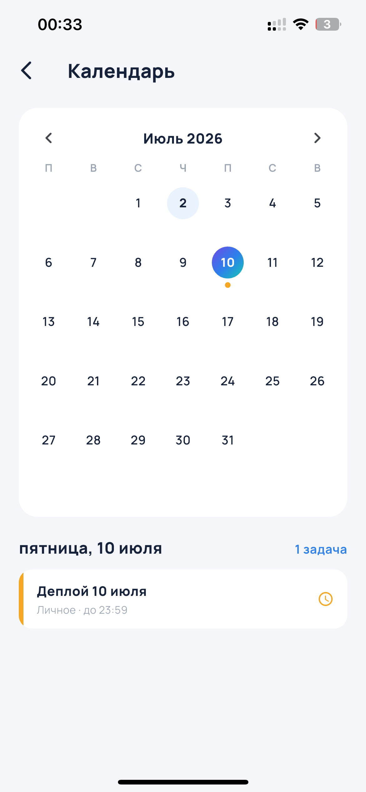
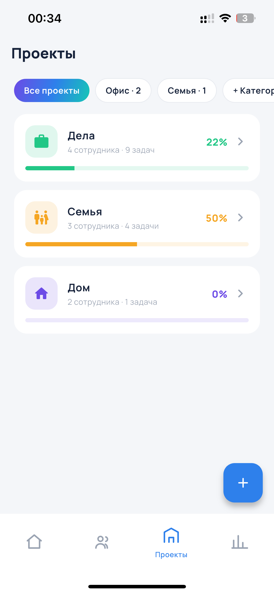
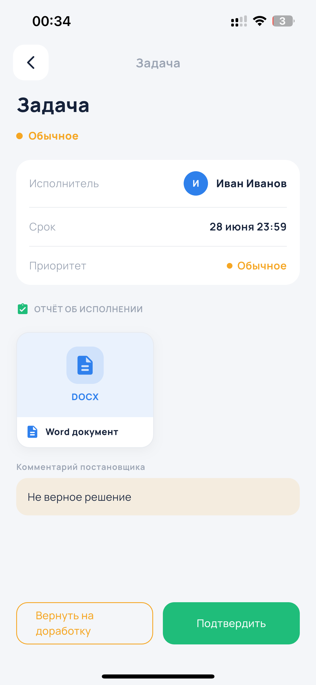
Mubina — мобильное управление задачами и командами
Кросс-платформенное приложение iOS/Android для задач, проектов, иерархии сотрудников и отчётов. Вёл полный цикл: Flutter-клиент, Laravel GraphQL, сервер, тестовые сборки и security-аудит.
- Проекты: дерево подчинения, роли участников, назначение руководителей и свободных ролей
- Задачи: приоритеты, дедлайны, личные/командные статусы и просрочки
- Отчёты: фото, видео-плеер, документы и серверная валидация загрузок
- Приёмка: подтверждение или возврат на доработку с комментарием и push
- Security/DevOps: закрыта критическая автовыдача прав, IDOR-roadmap, MR, APK и iPhone-сборки
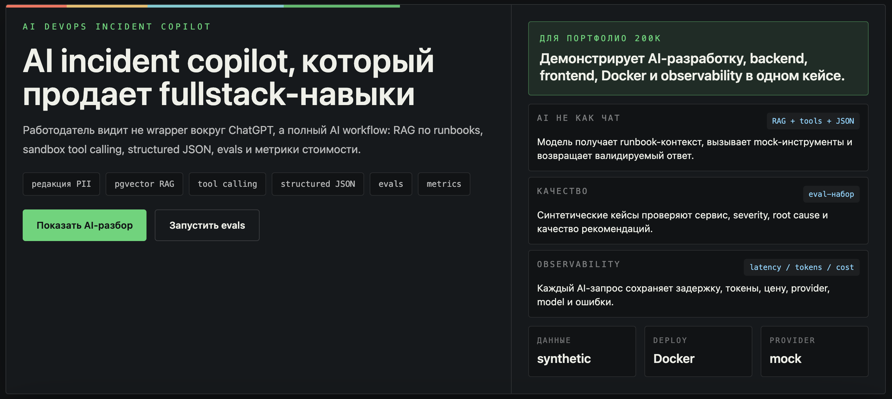
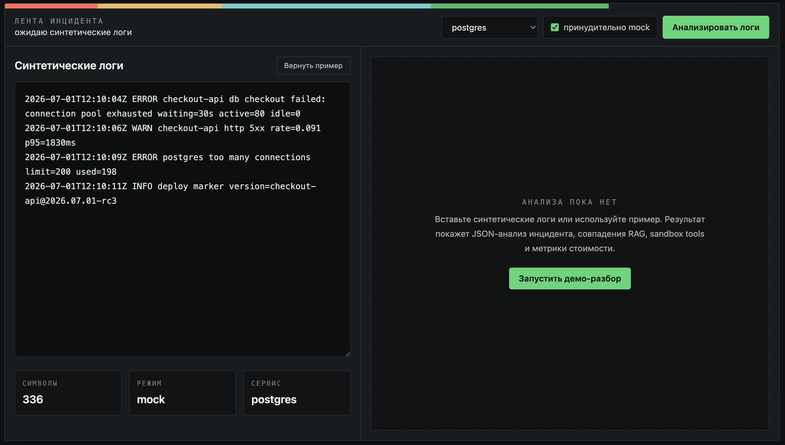
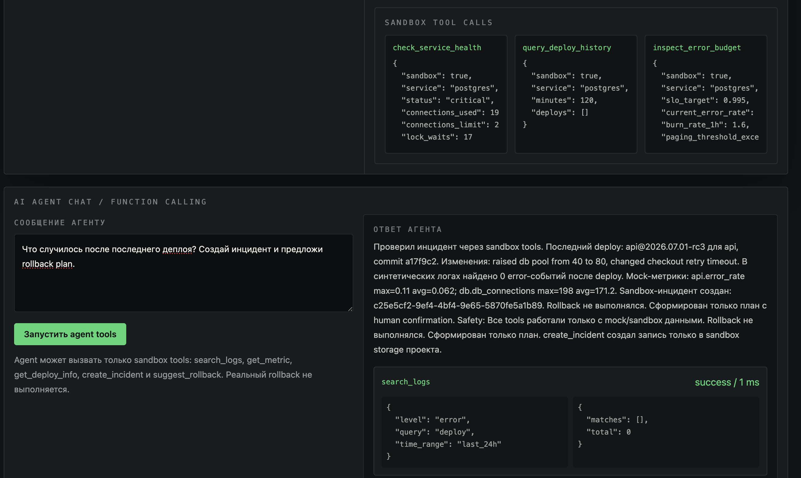
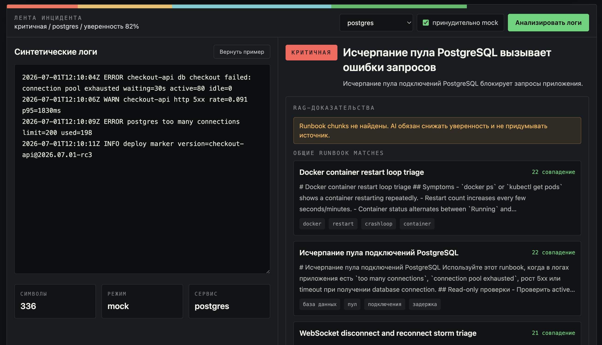
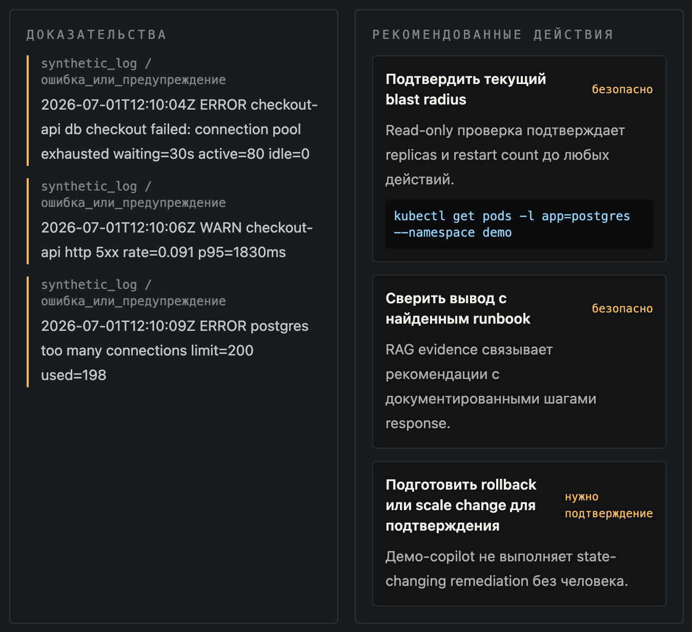
AI DevOps Incident Copilot — анализ инцидентов по логам
Fullstack AI-проект для анализа DevOps-инцидентов по синтетическим серверным логам. Не wrapper вокруг модели, а полный workflow: FastAPI backend, Next.js UI, RAG, sandbox function calling, evals качества и AI observability.
- Log Analyzer: severity, категория, root cause, evidence lines и безопасные рекомендации
- RAG runbooks: ingestion, chunking, pgvector-поиск и показ источников
- Sandbox tools: mock logs, metrics, deploy info, incident и rollback plan без реальных команд
- Evals на 55 cases: category accuracy 89.09%, evidence hit rate 91.82%
- Observability: provider, model, latency, tokens/cost, status, errors, tool calls и confidence
- Docker Compose, секреты через .env, без персональных данных, production logs и внутренних документов
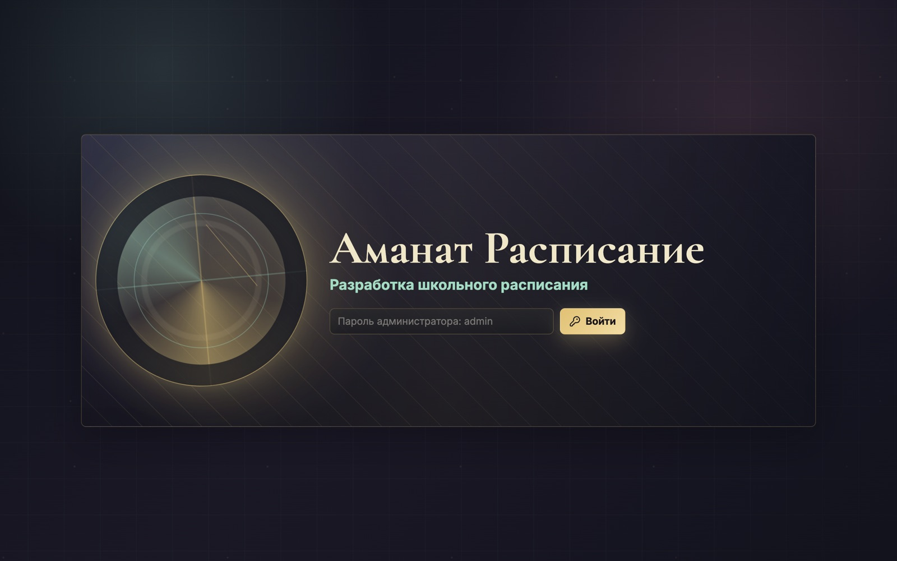
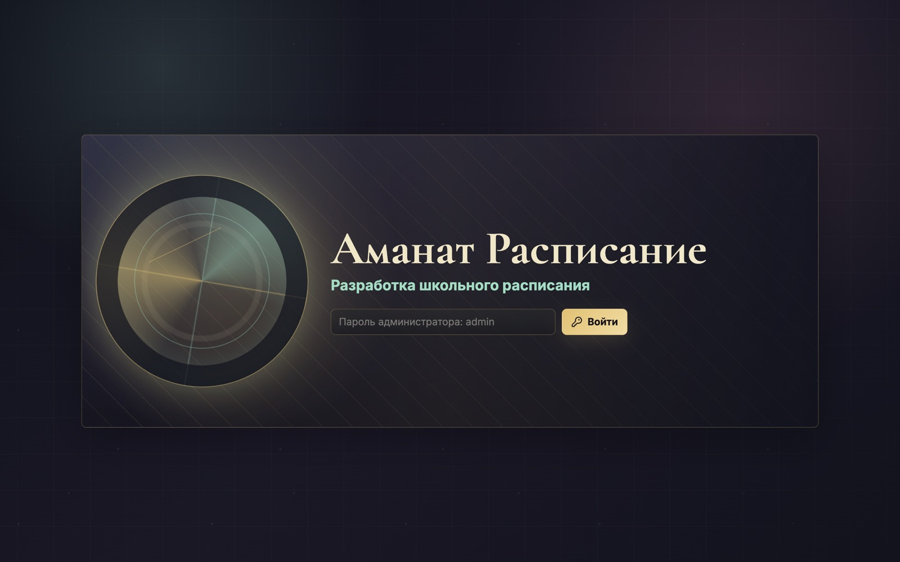
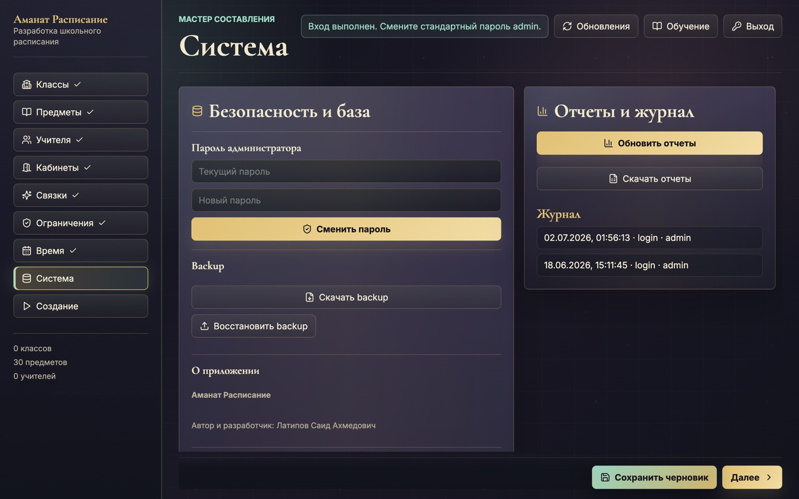
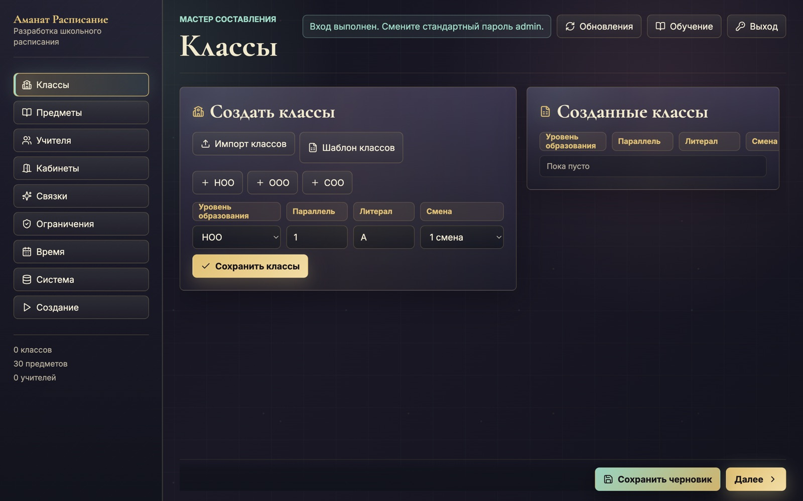
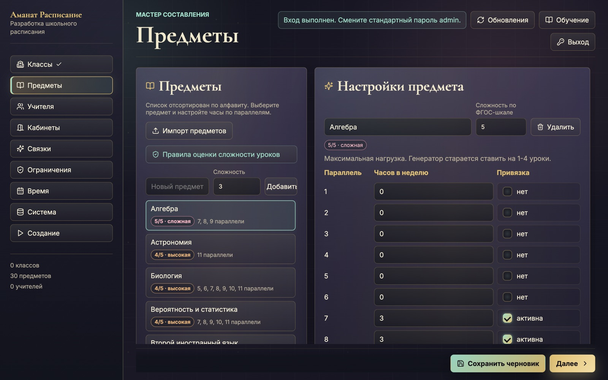
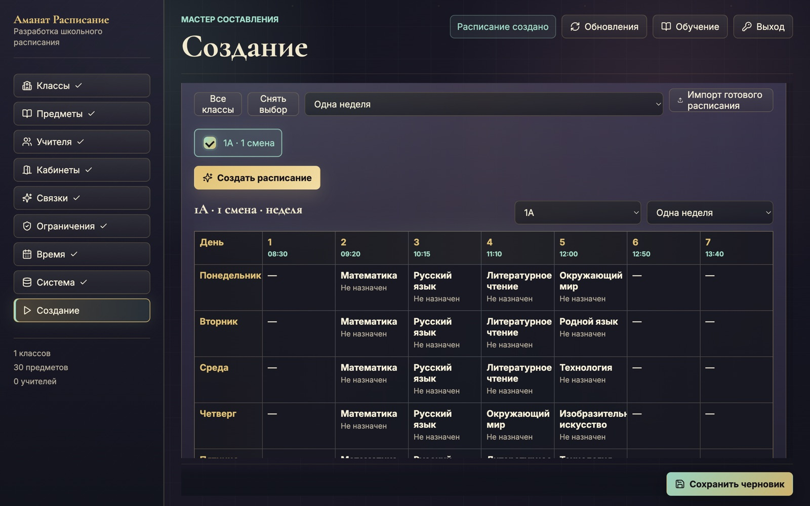
Аманат Расписание — генератор школьного расписания
Desktop-приложение для администратора школы: создание расписания для 1-11 классов с учётом смен, нагрузки учителей, кабинетов, предметов, сложности уроков и школьных ограничений. Работает локально, без внешнего сервера.
- Полный цикл данных: классы НОО/ООО/СОО, 1/2 смена, учителя, предметы, кабинеты, классные руководители
- Excel import/export: загрузка классов, учителей, предметов и выгрузка готового расписания
- Генератор расписания: часы по параллелям, связи учитель-класс-предмет, ограничения школы и учителей
- Ручное редактирование результата, PDF export, отчёты по учителям, классам, кабинетам, сменам и руководителям
- Windows installer, GitHub Releases, автообновление приложения; пароль администратора по умолчанию: admin

Botec — бот учёта платежей и подписок
Telegram-бот для учёта регулярных счетов и подписок: статусы оплат с цветовой индикацией, автоматические напоминания о просрочке и бюджетная отчётность для администратора.
- /status — текущие счета с цветовой индикацией: 🔴 просрочено, 🟡 скоро срок, ⏳ в ожидании, ✅ оплачено
- /history — история платежей пользователя
- Админ: /newbill, /report (бюджетная сводка), /pending, /users, /adduser, /remindall — массовая рассылка должникам
- Ежедневная джоба daily_payment_check (09:00 UTC, APScheduler) — автопроверка просрочек и напоминания
- HTML-экранирование пользовательских данных в отчётах, lock-файл против двойного запуска
- Деплой systemd-сервисом botec.service, доступ к Telegram API через WireGuard-туннель

FADI Bot — Telegram-консьерж для бренда одежды
Telegram-бот, автоматизирующий всю воронку бренда одежды: каталог, заказы, запись на примерку и подбор образа — с полным управлением ассортиментом и заказами прямо из Telegram, без отдельного сайта или CMS.
- Каталог товаров по категориям с фильтром по размеру, фото, описанием, составом и ценой
- Оформление заказа (имя, телефон, адрес, размер) с подтверждением
- Запись на примерку: выбор свободной даты и времени из слотов, подтверждение и напоминания
- Анкета подбора образа (style quiz) с рекомендациями товаров
- Админ-панель в Telegram: CRUD товаров, управление заказами по статусам, авто-уведомления клиенту и админам
- WireGuard split-tunnel для обхода блокировки Telegram у хостинг-провайдера, ufw firewall на серверах

Scazka VPN — коммерческий VPN на базе WireGuard
Полноценный сервис продажи VPN-доступа: личный кабинет для клиентов и админ-панель для владельца, с автоматической выдачей WireGuard-ключей после подтверждения оплаты.
- Регистрация и авторизация пользователей в личном кабинете (HTML/JS), RU/EN интерфейс
- Тарифные планы с разными сроками действия и ценами
- Заявки на оплату по реквизитам с подтверждением «Я оплатил» и ручной верификацией администратором
- Автовыдача WireGuard-ключей после подтверждения оплаты, отображение активных ключей и срока действия
- История покупок и платежей, админ-API с токен-авторизацией для тарифов, заявок и пользователей
- Docker Compose (Go-приложение + PostgreSQL), сервер как WireGuard exit-node, nginx + Let's Encrypt, секреты в env, ufw firewall
Готов обсудить твой проект
Пиши — отвечаю быстро.